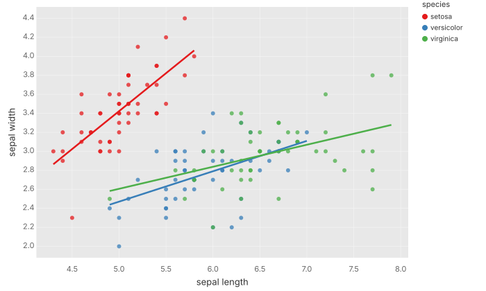
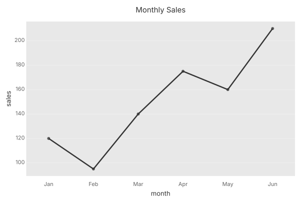
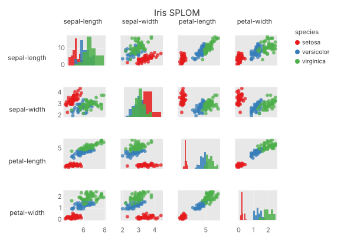

Plotje
Composable plotting in Clojure
1 Preface

Plotje is a Clojure library for composable plotting, inspired by the Grammar of Graphics.
General info
| Website | https://scicloj.github.io/plotje/ |
| Source | |
| Deps |  |
| License | MIT |
| Status | 🛠alpha🛠 |
Usage
Add to your deps.edn:
org.scicloj/plotje {:mvn/version "0.1.0"}Several core dependencies (kindly, fastmath, clojure2d, membrane, wadogo) are still on alpha or beta channels. Adopters may need to ride those alpha-channel transitives until they cut stable releases.
Plotje is intended to be used with data-visualization tools that support the Kindly convention such as Clay.
Quick example
Line chart with point markers from plain Clojure data:
(-> [{:month "Jan" :sales 120}
{:month "Feb" :sales 95}
{:month "Mar" :sales 140}
{:month "Apr" :sales 175}
{:month "May" :sales 160}
{:month "Jun" :sales 210}]
(pj/lay-line :month :sales)
pj/lay-point
(pj/options {:title "Monthly Sales"}))
Scatter plot matrix (SPLOM) — all pairwise combinations with color grouping:
(-> (rdatasets/datasets-iris)
(pj/pose (pj/cross [:sepal-length :sepal-width
:petal-length :petal-width]
[:sepal-length :sepal-width
:petal-length :petal-width])
{:color :species})
(pj/options {:title "Iris SPLOM"}))
License
Copyright © 2025-2026 Scicloj
Distributed under the MIT License.
Chapters of this book
- 🚀 Getting Started
- 🧱 Foundations
- 📊 Visualization Goals
- 🍳 How-to Guides
- 📖 Reference
- 🖼 Gallery
- 🔬 Internals
source: notebooks/index.clj